7 WGS与WES：从测序数据到可信的小变异
本章提要
本章以 WGS/WES 的胚系小变异分析为主线，先明确任务、变异类型和所需参考资源，再组织 DNA 比对与前处理。通过基因型似然和局部单倍型重组装的讲解，理解候选变异如何获得支持；随后学习单样本调用、gVCF 与联合分型、VCF 阅读和过滤、变异注释及 IGV 复核。最终需要交付能够追溯数据、参数和质量判断的结果，并说明分析的适用范围。较长的概率推导可结合第 11 章学习。
7.1 分析任务、变异类型与应用边界
明确本章要检测什么，以及哪些任务需要不同流程。
变异类型与本章范围
开始分析之前，先要把”检测变异”这句话拆开：检测哪些变异、用来回答什么问题。不同类型的变异在数据中的形态差别很大，检测它们所需的证据和流程也不同。
按变异涉及的范围，常见的分类从小到大有：
- 单核苷酸变异（SNV）：基因组某个位置上单个碱基与其他个体或参考基因组不同。当它在群体中达到一定频率时也称为 SNP（single nucleotide polymorphism）。SNV 是最容易检测的一类：一个位置、两种或多种碱基状态，比对结果直接可见。
- 插入缺失（indel）：相对于参考基因组插入或缺失了少量碱基（通常几个到几十个）。indel 比 SNV 难检测，因为一条带 indel 的 read 与参考比对时需要引入缺口，比对质量下降，缺失附近还常出现比对位置的整体偏移。
- 拷贝数变异（CNV）：大片段（通常大于 1 kb）的拷贝数增减。它的证据主要来自深度变化和读段两端间距，而不是逐碱基的差异，需要专门的检测工具。
- 结构变异（SV）：更大范围的结构重排，如倒位、易位、大片段插入缺失。短读长数据对 SV 的检测能力有限，常需要长读长测序辅助判断断点。
另一组必须区分的概念是变异发生在哪种细胞里：
- 胚系变异（germline variant）：存在于受精卵、随后存在于个体几乎所有细胞中的变异，一半来自父亲、一半来自母亲。检测胚系变异时，个体的每个二倍体位点都有两个等位基因可供判断。
- 体细胞变异（somatic variant）：个体发育过程中部分细胞新获得的变异，典型场景是肿瘤组织相对于正常组织的突变。它的检测需要肿瘤—正常配对样本，从混合信号中区分真正的体细胞事件，流程与胚系明显不同。
本章讨论的是胚系 SNV 与 indel 的检测，这也是”小变异（small variant）“通常所指的范围。CNV 和 SV 的检测思路（深度、分裂 read、组装）本章只在边角提及；体细胞变异检测的核心（配对比较、等位基因频率过滤）也不在本章展开。给定一个任务，先判断它属于哪一类，再决定用哪套流程——这是避免”用错工具得出错误结论”的第一步。
WGS 与 WES 的原理与取舍
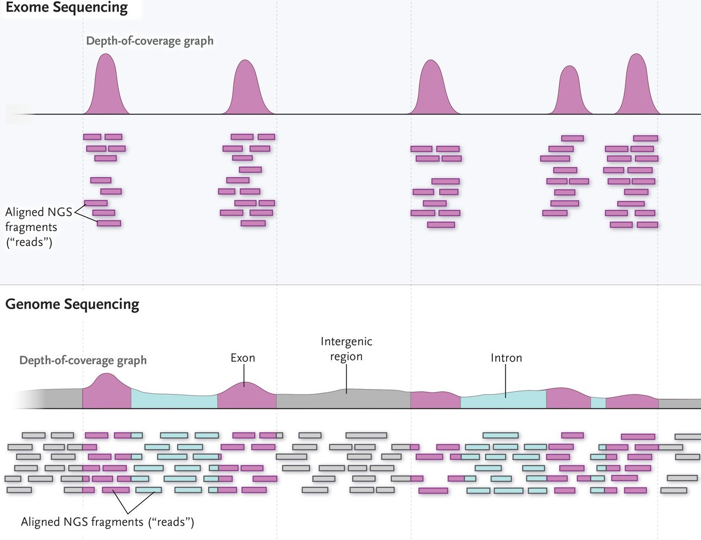
图 7.1 直观展示了两种策略的差别：全基因组测序（Whole Genome Sequencing，WGS）对约 30 亿碱基对的人类基因组均匀测序；全外显子组测序（Whole Exome Sequencing，WES）则先用探针捕获外显子区域，只对这部分约 30–60 Mb（约占基因组 1%–2%）富集测序。
真核生物中编码蛋白质的基因由外显子（exon）和内含子（intron）组成；转录后内含子被剪接移除、外显子相连，形成成熟的 mRNA（这一过程在第 5 章转录组建库部分已经介绍）。所有外显子区域的集合称为外显子组（exome）。从检测能力看，外显子组虽小，位置却关键：蛋白质编码基因只占人类基因组约 1%，却集中了约 85% 对疾病性状有较大效应的已知突变1。外显子长度普遍较短，约 80% 的人类外显子短于 200 bp，平均约 170 bp2。
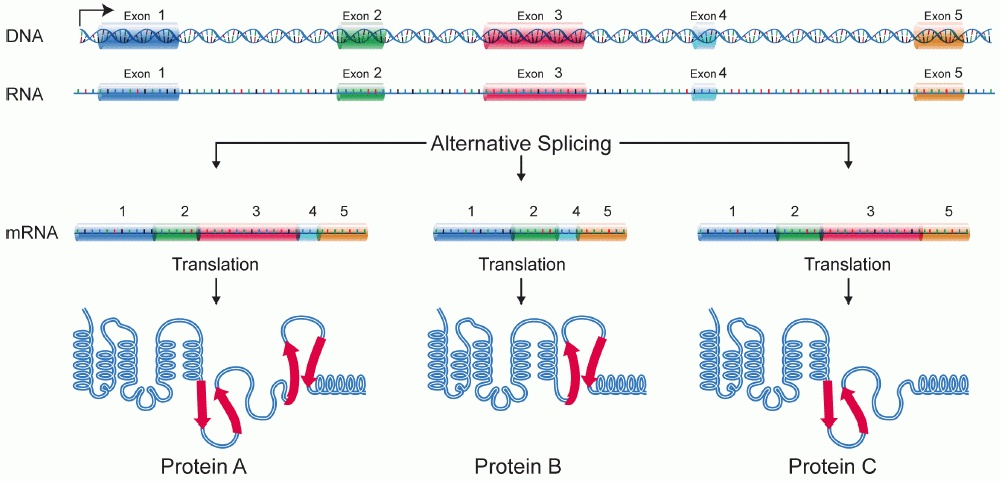
图 7.2 回顾了外显子、内含子与剪接的关系：内含子在剪接中被移除、外显子相连形成成熟 mRNA，而且外显子的取舍可以不同（可变剪接）。这是理解”WES 测的到底是什么区域”的基础——WES 的目标外显子，正是各转录本外显子集合的并集。
WGS 与 WES 各有所长，实际中应当结合研究课题和实验设计选择最合适的测序方案3。
WES 的优点：
- 深度高：外显子组的测序深度一般达到 50–100×，而 WGS 一般为 30× 左右——同样的测序量集中在了小得多的区域；
- 单样本测序成本低，数据存储和计算资源需求都相应减小；
- 编码区变异与表型的关联相对直接，结果可解释性强。
WES 的缺点与边界：
- 只能检测捕获区域内及其附近的变异（以 SNV 和 indel 为主），区域外的变异、CNV 和 SV 都在能力范围之外；
- 捕获和扩增步骤对不同区域的效率不一致，测序深度不均匀（7.2.3 详细讨论）；
- 实际产出的序列只有约 65%–75% 落在目标区域，其余为脱靶序列，需要靠提高整体深度弥补有效深度不足；
- 阴性结果要谨慎解读（见下一小节）。
WGS 不经过捕获，还可以构建 PCR-free 文库直接测序，因此覆盖更均匀、深度更稳定，能发现捕获设计之外的区域，SNV 检测灵敏度也不依赖捕获效率4。随着测序成本下降（见 图 7.3 ），WGS 在科研项目中的比重持续上升；但在需要高深度编码区检测、样本量大或预算有限的场景中，WES 仍然是常规选择。
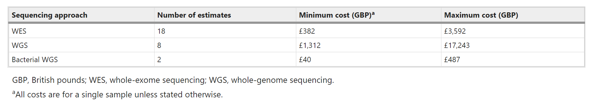
在 WGS 与 WES 之外还有第三种常见选择：靶向 panel 测序（targeted panel sequencing），只捕获数十到数百个特定基因或已知致病位点，深度可达数百至上千倍，适合定向检测已知变异、临床快速筛查等场景。它覆盖最窄、成本最低；WES 覆盖较宽、能发现新变异；WGS 覆盖最全。三者构成覆盖范围与成本的连续谱，没有绝对的优劣。
应用场景与检测边界
WES/WGS 检测胚系小变异的典型场景包括：
- 罕见病与孟德尔疾病的诊断：对外显子组进行测序分析、寻找致病的罕见变异，是临床遗传病和罕见病的常规检测方法之一。对超声发现结构异常、疑似单基因病的胎儿，产前外显子组测序可以显著提高诊断率，帮助家庭在围产期做出更明确的决策5。WES 首次成功定位孟德尔疾病致病基因（Miller 综合征）正是这一应用路线的里程碑6。
- 肿瘤研究中的胚系分析：肿瘤患者的遗传风险评估（如 BRCA1/2 胚系突变）使用的是胚系检测流程；肿瘤组织相对正常组织的体细胞突变检测则是另一套流程，本章不展开。
- 个人基因组与健康风险：分析个人基因组数据，评估部分疾病的携带状态与用药参考。这类分析要特别注意区分”检测到的变异”与”能解释的变异”——绝大多数常见病风险并不能由外显子组的数据可靠预测。
在这些场景中，最容易被忽视的判断是阴性结果的两种不同含义。WES 的检测设计覆盖近两万个基因的外显子区域，但实际检测是否全面，很大程度取决于捕获实验是否覆盖了全部目标区域、每个区域深度是否足够。因此对 WES 的阴性结果，需要进一步区分：是这个基因（的已捕获区域）确实没有检出变异，还是这个基因的某些区域根本未被有效测序。前者受限于检测方法的分辨率，后者则意味着结论只适用于”被覆盖到的部分”。同样，突变注释数据库的覆盖度、样本质量造成的偏差，在 WGS 中也无法完全避免——区分”没测到”与”测到了但没检出”，是解读阴性结果时的基本习惯。
实验设计与样本量的考量属于立项阶段：群体关联研究需要按统计功效估算样本量；家系分析（如三口之家 trio）通过遗传共分离缩小候选变异范围，样本量小也能提供强证据；临床检测则遵循检测规范的覆盖要求。这些设计决定影响后续所有分析步骤的效力，应与测序策略一起在开始时确定。
7.2 示例数据、参考资源与覆盖设计
准备一套能支撑目标检测的匹配输入。
本章示例数据
本章实战使用公共数据集中的一份人类 WES 数据：SRR8381428，来自 ENA/SRA 公共项目 PRJNA511646。它是国际标准参考样本 NA12878（CEPH/Utah 家系女性个体，HapMap 与 GIAB 项目的核心样本）的全外显子组测序：
| 属性 | 值 |
|---|---|
| 样本 | NA12878（Homo sapiens） |
| 文库 | WXS（全外显子组），PCR 文库，双端 |
| 测序仪 | Illumina HiSeq 4000 |
| 读长 | 2 × 150 bp |
| 数据量 | 约 41.9 Gb（约 1.42 亿对 reads） |
选择这份数据有三个原因：它是真实的研究级 WES 数据；NA12878 是世界上被测序最充分的人类样本之一，GIAB（Genome in a Bottle）项目为它提供了高置信度真值集，本章 7.8 讨论如何评价检测流程准确性时可以直接对照；数据可从 ENA 以 HTTPS 直链下载并核对官方校验值。下载方式与第 5 章相同（prefetch/fasterq-dump，或 ENA 直链 curl/wget），工具安装不再重复。
出于运行时间的考虑，本章的命令演示使用这份文件的教学子集（前 100 万对 reads）；你可以用相同命令处理完整数据，检查方法也一致。但要记住子集的局限：它只覆盖基因组的一部分区域，深度等指标不能外推到完整数据的水平。
参考基因组与变异资源
胚系变异检测需要两类配套资源，它们决定”比对到什么上”和”哪些位点已知存在变异”。
参考基因组。 本章沿用第 5 章使用的 Ensembl GRCh38（Homo_sapiens.GRCh38.dna.primary_assembly.fa）。下载后需要准备三样配套：
# 下载参考基因组（Ensembl，HTTPS 直链）
wget -c -P ref/ https://ftp.ensembl.org/pub/release-116/fasta/homo_sapiens/dna/Homo_sapiens.GRCh38.dna.primary_assembly.fa.gz
cd ref/ && gunzip Homo_sapiens.GRCh38.dna.primary_assembly.fa.gz
mv Homo_sapiens.GRCh38.dna.primary_assembly.fa GRCh38.fa
# 三样配套：BWA 索引、fasta 索引、序列字典
# bwa 索引默认以参考文件名为前缀，生成 GRCh38.fa.amb/.ann/.bwt/.pac/.sa 五个文件
bwa index GRCh38.fa
samtools faidx GRCh38.fa
gatk CreateSequenceDictionary -R GRCh38.fa -O GRCh38.dictbwa index 供比对使用（第 4 章讲过 FM 索引的原理）；.fai 让工具能按名字和区间快速取序列；.dict 是 GATK 要求的序列字典。三者必须与参考版本一致——用一套版本的索引配另一版本的字典，是最常见的”看起来都对了但结果全错”的来源之一。
已知变异位点（known-sites）。 BQSR 和候选过滤都需要”哪些位点在人群中已知存在变异”的清单，用来把真变异与测序错误区分开（原理见 7.3.2）。GATK 官方推荐的一组资源整合自 dbSNP、Mills indel、1000 Genomes 等人群项目；本章从 Ensembl 的 variation 数据库获取，它按染色体提供 dbSNP 整合的 VCF 及索引：
# 已知变异资源：Ensembl 按染色体提供的 VCF（dbSNP 整合，release-116）
wget -c -P ref/known/ https://ftp.ensembl.org/pub/release-116/variation/vcf/homo_sapiens/homo_sapiens-chr21.vcf.gz
wget -c -P ref/known/ https://ftp.ensembl.org/pub/release-116/variation/vcf/homo_sapiens/homo_sapiens-chr21.vcf.gz.csi
# GATK 需要 .tbi 索引（Ensembl 提供的是 .csi），一条命令补上：
gatk IndexFeatureFile -I ref/known/homo_sapiens-chr21.vcf.gz不同机构发布的 GRCh38 资源在染色体命名上不统一：Ensembl 用 1、2、X，Broad/GATK 官方包用 chr1、chr2、chrX。坐标本身一致，名字却不同。参考基因组、索引、known-sites VCF、注释数据库必须使用同一套命名，否则工具会报”找不到序列”，或者更隐蔽地静默丢失数据。混用不同来源的资源前，先用 samtools faidx 或 bcftools view -h 检查双方的序列名。
如果你阅读的教程使用 GATK 官方资源包（gs://broad-references/hg38-v0/ 下的 dbsnp138.vcf、Mills_and_1000G_gold_standard.indels.hg38.vcf.gz 等），注意该渠道目前需要 Google 云账号授权才能访问；本章改用公开直链的 Ensembl 资源，作用相同、版本更新。
覆盖度、测序深度与捕获偏差
第 4 章已经定义了测序深度（depth，每个位置被 reads 覆盖的次数）与覆盖度（coverage，被测到的区域比例）。WES 的特殊之处在于：深度不仅要整体够，还要在捕获区域内部足够均匀，因为判断每个外显子里有没有变异，依赖的是那个区域自己的深度。
WES 样本在上机前要经过捕获（capture）和PCR 扩增两个步骤，不同区域的效率差别会直接转化为深度的不均匀：
- GC 含量高的区域在捕获、扩增和测序中都受影响7；
- 低复杂度片段（如重复区域）和含模糊碱基的区域捕获效率偏低；
- 文库片段长度偏离扩增的最佳范围（约 70–200 bp 之外）的片段回收差；
- 假基因与真实基因高度相似，影响 reads 比对到正确位置的程度，进而影响该区域的深度计算；
- DNA 起始量低时需要更多 PCR 循环，引入大量重复，影响后续分析的可信度；
- DNA 质量差（如石蜡包埋 FFPE 样本提取的 DNA）导致某些区域片段化严重、偏差增大。
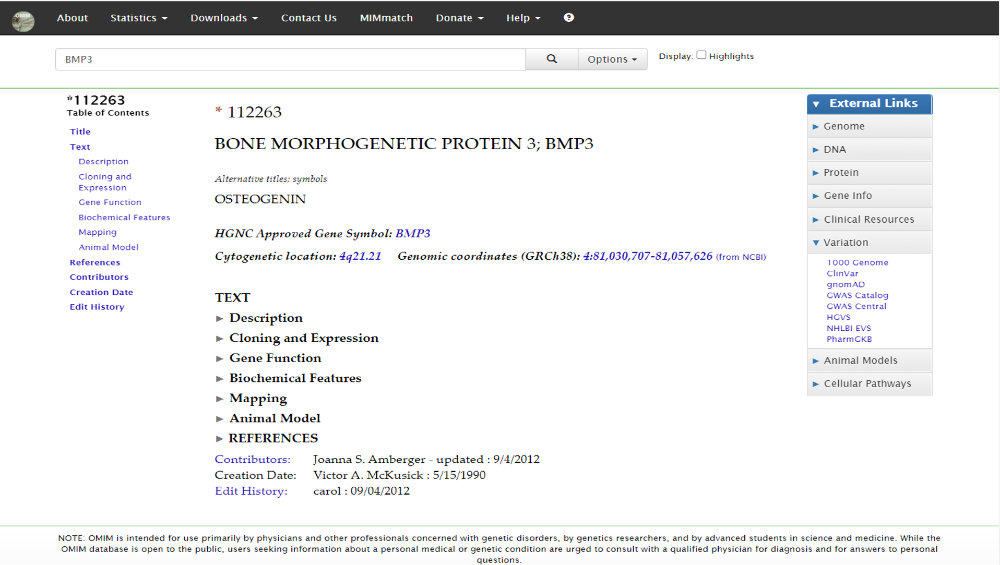
图 7.4 用同一批样本比较了 WES、经 PCR 的 WGS 与 PCR-free WGS：面板 a 显示编码外显子的平均深度随 GC 含量明显波动，WES 的波动最剧烈；面板 b 显示 WES 的覆盖集中在捕获目标区域，而 WGS 在各类区域上覆盖更完整。这组对比也提醒我们：PCR-free 文库能显著减弱 GC 偏差，这是高质量 WGS 的优势之一8。
捕获探针可以购买商品化产品，也可以自行设计：在感兴趣的区域增加探针、在难捕获区域提高探针密度。评估一个捕获设计的常用指标有：
- 中靶率（on-target rate）：落在目标区域内的序列占比；
- 覆盖度（coverage）：目标区域被测到的比例，如”98% 的目标区域达到 20× 以上”；
- 均一性（uniformity）：目标区域内部深度的均匀程度；
- 重复率（duplication rate）：来自同一原始片段的重复 reads 占比，高重复率意味着文库复杂度低或测序过饱和。
这四个指标是判断”WES 数据质量好不好”的第一组证据，拿到下机数据后就应该结合 FastQC/MultiQC 报告（第 3 章）与比对后的深度统计（本章 7.3.1）一起检查。看到某个外显子深度骤降时，按上面的偏差来源逐项排查——GC、捕获效率、重复、假基因——而不是先怀疑”这里有变异”。
7.3 DNA比对与变异检测前处理
理解哪些处理改善调用依据及其适用条件。
从 FASTQ 到分析就绪的 BAM
变异检测的输入不是 FASTQ，而是一个经过整理的 BAM。从下机数据到”分析就绪”，中间每一步都在为 caller 整理证据：
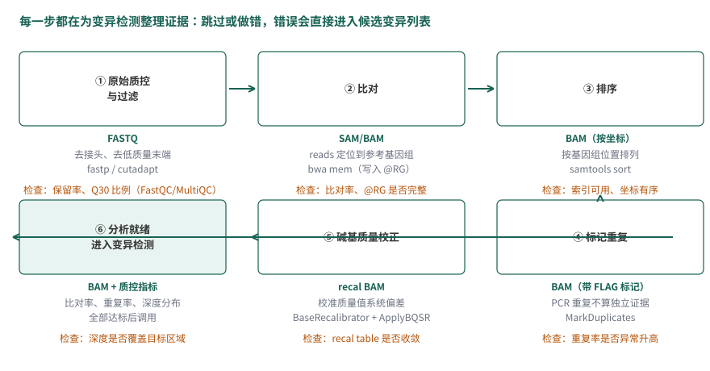
图 7.5 概括了这条链。对照第 4 章你会发现，算法与工具都见过，本章要回答的是新问题：这些步骤为什么是变异检测的必要条件，而不是可选的整理。
- 原始质控与过滤（第 3 章的 FastQC/cutadapt 或 fastp）：去除接头和低质量碱基。低质量碱基携带失真的质量值，会干扰后面每一步的统计判断。
- 比对（
bwa mem）：DNA 比对没有剪接位点问题，用第 4 章讲过的 BWT/FM 索引短读长比对器即可——RNA-seq 之所以需要 HISAT2/STAR 这类剪接感知比对器，是因为 reads 会横跨外显子连接。@RG读组信息在这一步写入：后面 BQSR 按读组统计误差，缺了它 BQSR 无法工作。 - 排序（
samtools sort）：把按 FASTQ 顺序排列的比对结果整理为按基因组位置排列。变异检测逐区间读取数据，位置排序是一切”按位置聚拢证据”步骤的前提。 - 标记重复（MarkDuplicates）：PCR 或测序过程中，同一 DNA 片段产生的多条 reads 不是独立证据。第 4 章讲过重复的识别方法（位置与方向相同）；对变异检测而言，不去重的后果是具体的：一个片段被扩增三次、恰好带一个测序错误，caller 会看到”三条一致支持错误碱基”的假证据，等位基因比例被扭曲。标记（而非删除）重复保留了信息，让后续统计把这类 reads 排除在外。
- 碱基质量校正（BQSR）：下一小节专门讨论。
“分析就绪”没有单一判据，常见的检查包括：比对率、重复率、深度分布（平均深度、目标区域达到 20× 的比例）、@RG 完整性。这些指标异常时先解决数据问题，再进入变异检测——在坏数据上跑出的变异列表，错误没有简单的下游办法弥补。
碱基质量校正 BQSR
为什么需要校正。 Phred 碱基质量值由测序仪的 base-calling 算法给出。这套算法对研究者是黑盒：它给出的质量评估带有一定程度的系统性偏差（非随机误差），实际测序质量可能被低估或高估。质量值是变异检测公式中错误率的直接输入（7.4 会看到 \(\epsilon\) 如何进入似然计算），系统性的偏差会原样传递到变异的置信度上。
举一个形象化的例子：对于某一次测序（一个 run），如果无论何时测到 AA 这样的子序列时，紧随其后的那个碱基的测序错误率总比其实际错误率高出约 1%，那么就可以把这类碱基找出来，把它们的报告错误率整体下调来校正。
BQSR 的思路。 BQSR（Base Quality Score Recalibration）用回归的框架重新校准质量值：把”测序仪声称的质量”与”实际观察到的错误率”对齐。它的前提假设是：影响质量评估的因素可以列举为几类协变量（covariate）——读组（read group）来源、碱基在 read 中所处的 cycle、该碱基上游若干碱基的序列背景（默认取上游 6 个碱基）、以及原始报告质量值本身。协变量组合相同的碱基归入同一组（bin），同一 bin 内的碱基被认为具有相同的真实错误率。
那”实际观察到的错误率”从哪里来？BQSR 把比对结果与已知变异位点对照：先剔除 known-sites 清单上的人群变异位点，剩下的位置上，read 与参考基因组的每个 mismatch 都被假定为测序错误而非真实变异。于是每个 bin 的经验错误率可以直接数出来：
\[ EQ = -10 \log_{10} \frac{\#\text{mismatch}}{\#\text{bases}} \](7.1)
即 Phred 标准的质量定义——错误率的 −10·log₁₀ 缩放（与第 3 章碱基质量值的定义一致）。观察量少的 bin 会被平滑处理，避免”只看了 2 个碱基、恰有 1 个 mismatch”就给出极端估计。有了每个 bin 的经验质量，BQSR 训练出校正模型，ApplyBQSR 再把校正后的质量值写回 BAM。BQSR 本质上是这样一种回归模型：输入是碱基的协变量取值，输出是它的经验质量：
\[ X_i=(RG_i,\ Cyc_i,\ Context_i,\ Q_i) \quad \to \quad y_i \](7.2)
其中 \(i\) 标记当前碱基，\(RG_i\) 是所属读组，\(Cyc_i\) 是所在 cycle，\(Context_i\) 是序列背景，\(Q_i\) 是原始报告质量值，\(y_i\) 是按 公式 7.1 数出的经验质量。
BQSR 只校正质量值而不改变碱基组成。对一个质量值偏低的碱基，我们只能说”它被解析成当前碱基的可靠性存疑”，但无法说明它更可能是什么碱基，所以干脆不改碱基本身。另注意”mismatch 即错误”这一假设依赖 known-sites 的质量：已知位点清单覆盖不足时（如研究物种缺乏人群变异资源），真实变异会被误当成错误，校正反而引入偏差。
操作。 在示例数据与 Ensembl 资源上的两步命令（沿用 7.2.2 准备的文件；完整脚本见 7.5.1）：
# 1. 建立校正模型：--known-sites 给出已知变异位点，输出校正表
gatk BaseRecalibrator \
-R ref/GRCh38.fa \
-I BAM/NA12878.subset.sorted.markdup.bam \
--known-sites ref/known/homo_sapiens-chr21.vcf.gz \
-O BAM/NA12878.subset.recal.table
# 2. 把校正结果写回 BAM
gatk ApplyBQSR \
-R ref/GRCh38.fa \
-I BAM/NA12878.subset.sorted.markdup.bam \
--bqsr-recal-file BAM/NA12878.subset.recal.table \
-O BAM/NA12878.subset.sorted.markdup.recal.bam
什么时候不做 BQSR。 校正模型需要足够的数据支撑。单样本 WES 的数据量通常够用；但样本极小、数据量过低，或 known-sites 资源与研究物种、群体不匹配时，BQSR 的估计不可靠，宁可不校正并如实记录。GATK 的最佳实践对 WGS 大样本推荐 BQSR；对高质量的 PCR-free 数据，BQSR 带来的改变会小很多。判断标准回到本章主线：校正的输入证据是否充分，而不是”流程里有没有这一步”。
7.4 基因型似然与局部单倍型重组装
理解为什么一个非参考碱基不等于一个真实变异。
从碱基比例到基因型似然
先从一个具体的比对场景开始。某一区域的比对结果如下：
REFERENCE: atcatgacggcaGtagcatat
--------------------------------
READ1: atcatgacggcaGtagcatat
READ2: tgacggcaGtagcatat
READ3: atcatgacggcaAtagca
READ4: cggcaGtagcatat
READ5: atcatgacggcaGtagc大写字母标出候选变异位点：共 5 条 reads 比对到该位置，其中 4 条与参考一致（G），1 条不同（A），即 G:A = 4:1。
按最朴素的规则——与参考不一致的碱基比例在 20%–80% 之间就判为杂合——这个位点”显然”是 G/A 杂合。但支持 A 的 read 只有一条，而这一条 read 上的碱基可能来自：
- 实际存在的变异；
- 建库过程中引入的错误（PCR）；
- 测序过程中的碱基识别错误（base calling）；
- 比对错误（read 其实来自别的位置）。
仅凭碱基比例作判断，无法区分这些来源。可靠的变异检测需要综合考虑更多信息，在给出基因型推断的同时给出该推断的置信度。
贝叶斯框架。 用 \(S\) 表示该位点的测序数据，\(G_i\) 表示候选基因型。基于各基因型的人群先验概率 \(P(G_i)\) 与似然 \(P(S \mid G_i)\)，用贝叶斯公式推断后验概率，取后验最高的基因型作为结果：
\[ G = \arg\max_{G_i} P(G_i \mid S) \](7.3)
\[ P(G_i|S)=\frac{P(S|G_i)\cdot P(G_i)}{P(S)} \](7.4)
对确定的测序数据，\(P(S)\) 是与 \(G_i\) 无关的常数，可以省略，于是 \(P(G_i \mid S) \propto P(S \mid G_i) \cdot P(G_i)\)。\(P(G_i)\) 是基因型的人群频率，来源有两种：
- 样本少时，从大型人群重测序项目获取等位基因频率再推算基因型频率（如 dbSNP 及其频率注释）；
- 有自己的研究人群时，可从当前数据的等位基因频率按哈迪–温伯格平衡（Hardy-Weinberg equilibrium，HWE）推算。例如某位点以 A/T 两种形式存在，A 的频率为 1%（\(p = 0.01\)，\(q = 0.99\)），则三种基因型的期望频率为 AA \(p^2 = 0.0001\)、AT \(2pq = 0.0198\)、TT \(q^2 = 0.9801\)。
于是问题集中到似然 \(P(S \mid G_i)\) 怎么算。假设各条 read 相互独立，似然可以写成各 read 似然的乘积：
\[ P(S|G_i)=\prod_i P(S_i | G_i) \](7.5)
单条 read 的似然。 记二倍体个体在该位点的基因型为 \(g\)，表示其所含参考等位基因的个数：\(g = 0\)（两个等位基因都不是参考）、\(g = 1\)（杂合）、\(g = 2\)（两个都是参考）。用指示变量 \(I_i\) 标记一条 read 在该位点的观察结果：read 碱基与参考一致时 \(I_i = 1\)，不一致时 \(I_i = 0\)。
下面采用”二等位、对称错误”的简化教学模型：假设位点只有参考与非参考两种状态，且测序错误把任一真实碱基读成另一特定碱基的概率都是 \(\epsilon\)。实际工具使用四碱基完整错误模型，每条 read 用自己的质量值 \(Q\) 换算错误率 \(\epsilon = 10^{-Q/10}\)；本节的式子不能直接套用到真实数据计算，但推理结构与工具一致。
下节推导只用这几个符号：
| 符号 | 含义 |
|---|---|
| \(g\) | 基因型：所含参考等位基因个数（0、1、2） |
| \(I_i\) | 第 \(i\) 条 read 的观察指示：与参考一致为 1，否则为 0 |
| \(\epsilon_i\) | 第 \(i\) 条 read 在该位点的测序错误率（由其质量值换算） |
| \(k\)、\(l\) | 比对到该位点的 reads 总数、其中与参考一致的条数 |
| \(S_i\)、\(d\) | 第 \(i\) 条 read 的观察数据；全部 reads 的观察数据 |
给定基因型 \(g\)，一条 read 的观察似然为：
\[ P(S_i \mid g) = \left[\frac{g}{2}(1-\epsilon_i) + \frac{2-g}{2}\epsilon_i\right]^{I_i} \cdot \left[\frac{2-g}{2}(1-\epsilon_i) + \frac{g}{2}\epsilon_i\right]^{1-I_i} \](7.6)
这个式子拆开看并不难。方括号里每一项都是两种情形的全概率：read 随机来自父方或母方的染色体各占 \(\frac{1}{2}\)，因此观察到与参考一致的碱基的概率是 \(\frac{g}{2}(1-\epsilon_i) + \frac{2-g}{2}\epsilon_i\)——基因型以 \(g/2\) 的概率提供参考等位基因（读对的概率 \(1-\epsilon_i\)），以 \((2-g)/2\) 的概率提供非参考等位基因（被读成参考的概率 \(\epsilon_i\)）。三种基因型分别代入：
\[ \left\{ \begin{array}{ll} P(S_i \mid g{=}0) = (1-\epsilon_i)^{1-I_i}\cdot\epsilon_i^{I_i} \\[4pt] P(S_i \mid g{=}1) = \dfrac{1}{2}(1-\epsilon_i) + \dfrac{1}{2}\epsilon_i = \dfrac{1}{2} \\[4pt] P(S_i \mid g{=}2) = (1-\epsilon_i)^{I_i} \cdot \epsilon_i^{1-I_i} \end{array} \right. \](7.7)
杂合（\(g{=}1\)）时无论读到什么碱基，似然都是 \(\frac{1}{2}\)；纯合时似然取决于观察方向与错误方向的匹配。三个式子都来自同一形式9：
\[ P(S_i \mid g)=P(I_i=1)^{I_i}\cdot P(I_i=0)^{1-I_i} \](7.8)
把单条 read 的似然推广到整个位点：如 图 7.6 所示，\(k\) 条 reads 比对到该位点，其中 \(l\) 条与参考一致、\(k - l\) 条不一致，第 \(j\) 条 read 的测序错误率为 \(\epsilon_j\)（由它自己的质量值给出）。将各基因型代入 公式 7.6 并对全部 reads 连乘：
\[ \begin{aligned} L(g) = P(d \mid g) &= \prod_{i=1}^l \left[\frac{g}{2}(1-\epsilon_i) + \frac{2-g}{2}\epsilon_i \right] \prod_{j=l+1}^k \left[\frac{2-g}{2}(1-\epsilon_j) + \frac{g}{2}\epsilon_j \right] \end{aligned} \](7.9)
公式 7.9 中的方括号来自全概率分解：记 \(B\) 为”该碱基测序正确”、\(C\) 为”该碱基实际与参考一致”，则”观察到与参考一致”要么 \(B,\,C\) 同时发生（是参考且读对），要么 \(\overline{B},\,\overline{C}\) 同时发生（非参考且读错）。测序错误与真实碱基组成无关（\(B \perp C\)），于是每一项都能写成乘积之和的形式；而”实际与参考一致”的概率由基因型给出——二倍体有 2 个等位基因、其中 \(g\) 个是参考，随机抽出一条 read 的等位基因为参考的概率是：
\[ \begin{aligned} &Pr(B)=1-\epsilon, \quad Pr(\overline B)=\epsilon \\ &Pr(C)=\frac{g}{2}, \quad Pr(\overline C)=\frac{2-g}{2} \end{aligned} \](7.10)
把这组概率代回分解式，就得到 公式 7.9 的最终形式：
\[ \begin{aligned} \prod_{i=1}^l \left[\frac{g}{2}(1-\epsilon_i) + \frac{2-g}{2}\epsilon_i \right] = \frac{1}{2^k}\prod_{i=1}^l \left[g(1-\epsilon_i) + (2-g)\epsilon_i \right] \end{aligned} \](7.11)
即把 \(\frac{g}{2}\) 与 \(\frac{2-g}{2}\) 的公共因子 \(\frac{1}{2}\) 提出、连乘成 \(\frac{1}{2^k}\) 的整理。
回到开头的例子：G:A = 4:1、各 read 质量值 Q30 左右（\(\epsilon \approx 0.001\)）时，\(g{=}2\)（纯合参考）下观察到那条不一致 read 的似然约为 \(\epsilon\)；\(g{=}1\)（杂合）下每条 read 的似然约 \(\frac{1}{2}\)，五条连乘约 \(0.03\)；再结合人群先验中”绝大多数位点纯合”的事实，纯合参考的后验通常仍然更高——这正是”不能只看碱基比例”的定量版本。当支持 A 的 read 增加到几十条、质量值又高时，天平才会倒向杂合。先验、似然、错误率三者共同决定结论，缺一不可。
HaplotypeCaller 的局部单倍型重组装
上节把”一个位点”的推断讲清楚了，但真实的 caller 并不是逐位点独立调用的。GATK 的 HaplotypeCaller 是目前胚系 SNV/indel 检测最常用的算法之一，理解了它，基本就理解了现代变异检测的原理——它的核心思想是：先把候选区域的所有证据放在一起重组装，再逐位点判断基因型。
HaplotypeCaller 在候选变异区域进行局部重组装，生成候选单倍型，并评估 reads 对这些单倍型的支持。这里的单倍型（haplotype）是一个区域内的序列组合，并不等于”单倍体个体”。在常用的 GATK 胚系多样本流程中，每个样本先独立生成 gVCF，随后进行联合分型（见 7.5.2）；不能把这两个阶段理解为先把整个人群的 reads 混在一起运行 HaplotypeCaller。
HaplotypeCaller 把变异检测分为四个大的步骤：
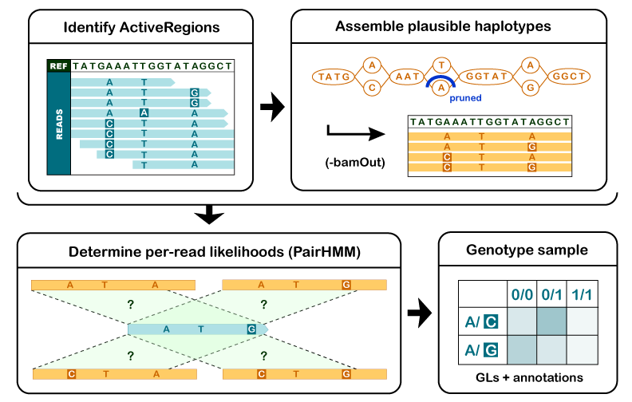
1. 确定候选变异区域（ActiveRegion）。 通过 reads 在参考基因组上的比对情况，筛出潜在变异区域。这一步只划定范围，不做判断。
2. 对候选区域进行局部重组装，确定单倍型。 对每个 ActiveRegion，利用比对到该区域上的所有 reads 构建一个类似于 de Bruijn 图的组装图，对区域做局部重新组装，枚举该区域中可能的单倍型序列；再用 Smith-Waterman 算法（第 4 章讲过的局部比对）把每条单倍型与参考重新比对，重新检出潜在变异位点。相比”直接看比对结果”，重组装能纠正比对阶段留下的偏移——对 indel 尤其有利：一条跨越 indel 的 read 在逐碱基比对中位置可能整体错位，重组装后它与哪条单倍型更匹配就一目了然。
3. 计算各单倍型的似然值。 对每个 ActiveRegion，用 PairHMM 算法把区域内每条 read 与每条候选单倍型两两比对，得到 read–单倍型似然矩阵 \((a_{ij})\)，其中 \(a_{ij} = P(r_i \mid H_j)\)：
\[ \begin{array}{l|c|c|c|c} \hline & H_1 & H_2 & .. & H_m \\ \hline r_1 & a_{11} & a_{12} & .. & a_{1m} \\ r_2 & a_{21} & a_{22} & .. & a_{2m} \\ .. & .. & .. & .. & .. \\ r_n & a_{n1} & a_{n2} & .. & a_{nm} \\ \hline \end{array} \](7.12)
这个矩阵描述每条 read 在每个候选单倍型条件下的似然。软件随后把单倍型层面的证据映射到候选等位基因，并计算基因型似然。不能把跨 reads 的似然直接相加当成单倍型的概率；下面在条件独立假设下使用似然乘积进行教学推导，具体聚合规则以所使用的 GATK 版本实现为准。
PairHMM 是整个流程中计算量最大的部分，GATK 的性能优化常常以此为突破口——GPU 加速、把 Pair-HMM 模块烧录到 FPGA 芯片，也有从算法出发的加速工作10。
4. 计算候选位点的基因型后验。 在步骤 3 的基础上，我们已经知道每条 read 对每种单倍型的支持程度。最后一步回到贝叶斯框架，计算候选位点上每种基因型的后验概率，选择最高的作为结果输出到 VCF。样本基因型 \(G\) 的后验为：
\[ P(G \mid D) = \frac{P(G)P(D \mid G)}{\sum_i P(G_i)P(D \mid G_i)} \](7.13)
分母对所有基因型取相同的值，可以省略：
\[ P(G \mid D) \propto P(G)P(D \mid G) \](7.14)
其中 \(P(G)\) 是基因型 \(G\) 的先验概率，不能与单个等位基因的频率混为一谈。工具对先验的处理取决于模型和参数，不能假定 GATK 默认给所有基因型相同先验。
\(P(D \mid G)\) 表示在基因型为 \(G\) 的前提下，观察到测序数据 \(D\)（仅考虑该 ActiveRegion 范围）的条件概率。假设各条 read 相互独立：
\[ P(D \mid G)=\prod_j P(D_j \mid G) \](7.15)
其中 \(D_j\) 是该样本测序数据中的第 \(j\) 条 read。二倍体的每条 read 要么来自同源染色体 \(H_1\)、要么来自 \(H_2\)，用全概率展开：
\[ P(D_j \mid G) = P(H_1 \mid G)P(D_j \mid H_1) + P(H_2 \mid G)P(D_j \mid H_2) \](7.16)
一条 read 来源于两条同源染色体的概率均等，\(P(H_1 \mid G)=P(H_2 \mid G)=\frac{1}{2}\)：
\[ P(D_j \mid G)=\frac{P(D_j \mid H_1)}{2} + \frac{P(D_j \mid H_2)}{2} \](7.17)
这里把 \(H_1\)、\(H_2\) 理解为它们各自对应的单倍型，则 \(P(D_j \mid H_n)\) 是在特定单倍型下产生 read \(D_j\) 的条件概率——正是步骤 3 中 PairHMM 算出的矩阵元素。代回 公式 7.15：
\[ P(D \mid G)=\prod_j \left( \frac{P(D_j \mid H_1)}{2} + \frac{P(D_j \mid H_2)}{2}\right) \](7.18)
到这里，整条推理链闭合了：reads 对单倍型的似然（PairHMM）→ read 对基因型的似然（两条同源染色体各半）→ 基因型的后验（贝叶斯）。VCF 里每条记录的基因型与置信度，就是这条链的输出。
最后说明”二等位”假设与多单倍型的关系。后面的分析中对每个变异位点只考虑二等位形式——若一个区域在群体中存在 \(n\) 个变异位点，在只考虑二等位的前提下，该区域理论上共有 \(2^n\) 种单倍型，但具体到要判断的某个位点，我们只区分参考与非参考两种状态。这是简化，也是主流工具的默认工作方式；更复杂的情形（多等位基因、复合杂合）需要额外的分析步骤。
7.5 单样本调用、gVCF与联合分型
理解单样本检测和多样本分型之间的关系。
全外显子组分析实战：从质控到注释
现在把 7.2–7.4 的准备串成一条完整的分析链。整体思路：下机序列经质控、比对到参考基因组、前处理得到”分析就绪”的 BAM，HaplotypeCaller 从中检出候选变异并给出基因型与置信度，存入 VCF；最后用 ANNOVAR 结合人群与功能数据库注释变异，得到可以开始生物学解读的结果。
本章示例所用软件（安装方式见第 2、3 章）：fastp、FastQC、MultiQC、bwa、samtools、GATK 4（本文示例为 4.6.2.0）与 ANNOVAR。注意 GATK 4.6 需要 Java 17 运行时：用 conda/micromamba 安装后，如果 gatk 报 UnsupportedClassVersionError，说明它找到的是系统里更旧的 Java，需要安装 openjdk 17 并通过 JAVA_HOME 指给 GATK。质控工具用 fastp（第 5、6 章同款）；如果你熟悉 Trimmomatic，本章流程同样适用，只需把过滤参数对应替换，其余步骤不变。
第一步：原始数据质控。 先对原始 FASTQ 跑 FastQC/MultiQC 了解数据状态，再过滤：
sample=NA12878
data=data/
mkdir -p fastqc fastp BAM VCF
# 原始数据整体质量（第 3 章已讲如何读报告）
fastqc -o fastqc/ ${data}${sample}_1.fastq.gz ${data}${sample}_2.fastq.gz
multiqc fastqc/ -o fastqc/
# 过滤：自动检测双端接头， sliding window 修剪低质量末端
fastp \
-i ${data}${sample}_1.fastq.gz -I ${data}${sample}_2.fastq.gz \
-o ${data}${sample}_1.clean.fq.gz -O ${data}${sample}_2.clean.fq.gz \
--detect_adapter_for_pe --cut_front --cut_tail --cut_mean_quality 20 \
-h fastp/${sample}.html -j fastp/${sample}.json过滤后查看 fastp 报告中的保留率与 Q30 比例：保留率过低说明原始数据质量差，需要先回到数据本身找原因，而不是继续硬跑。本章教学子集上的实际结果：
fastp: reads 2000000 -> 1999982 (100.0%), q30rate 0.9609 -> 0.9628200 万条 reads 过滤后保留 99.99%、Q30 比例 96.3%，说明这份子集的原始质量很好。
第二步：比对与排序。 比对时通过 -R 写入读组信息——SM 必须是真实样本名，ID 在同一样本内唯一，LB 标记文库名，PL 标记平台。这些字段不是注释：BQSR 按读组分别建模，SM 写错会直接影响后续统计：
# 比对并直接按坐标排序（管道省去中间 SAM 文件）
bwa mem -t 8 \
-R '@RG\tID:NA12878_WES\tSM:NA12878\tLB:NA12878_lib1\tPL:ILLUMINA' \
ref/GRCh38.fa \
${data}${sample}_1.clean.fq.gz ${data}${sample}_2.clean.fq.gz \
| samtools sort -@ 4 -o BAM/${sample}.sorted.bam -
# 比对质量速查：比对率、重复概况、深度分布
samtools flagstat BAM/${sample}.sorted.bam
samtools coverage BAM/${sample}.sorted.bam本章子集的 flagstat 摘要（节选）：
2001141 + 0 mapped (99.43% : N/A)
1965286 + 0 properly paired (98.27% : N/A)
1167 + 0 singletons (0.06% : N/A)第三步：标记重复。 GATK 的 MarkDuplicates 按比对位置与方向识别同一来源的片段，在 FLAG 中标记而不是删除：
gatk MarkDuplicates \
-I BAM/${sample}.sorted.bam \
-O BAM/${sample}.sorted.markdup.bam \
-M BAM/${sample}.markdup_metrics.txt \
--CREATE_INDEX truemarkdup_metrics.txt 中的重复率是 7.2.3 那组捕获指标之一：WES 高深度文库重复率偏高常见，但异常升高要怀疑 PCR 过度扩增或起始量不足。本章子集实测重复率 5.36%（53,294/993,663 读对），文库复杂度估计约 893 万——对 WES 文库属于正常偏好。
NA12878_lib1 READ_PAIRS_EXAMINED=993663 READ_PAIR_DUPLICATES=53294
PERCENT_DUPLICATION=0.053637 ESTIMATED_LIBRARY_SIZE=8929119第四步：BQSR。 按 7.3.2 的两步执行，输入 BAM/${sample}.sorted.markdup.bam 与 7.2.2 的 known-sites，输出 ${sample}.sorted.markdup.recal.bam。
第五步：变异检测。
这一步输出的 VCF 还没有经过过滤，是”候选 + 置信度”的原始集合；如何读、如何过滤，是 7.6 的主题。
第六步：变异注释（ANNOVAR）。 ANNOVAR 是一款广泛使用的注释工具，学术用途免费，需在官网注册获取下载链接；解压后先为 hg38 下载数据库：
# 注册下载并解压后，进入 annovar/ 目录；为 hg38 下载数据库（体积较大，按需选择协议）
annotate_variation.pl -buildver hg38 -downdb refGene humandb/
annotate_variation.pl -buildver hg38 -downdb avsnp151 humandb/
annotate_variation.pl -buildver hg38 -downdb gnomad_exome humandb/数据库协议随时间更新（本节命令以 2026-10 官方可用版本为准，使用前查看 ANNOVAR 网站的最新列表），注释时按顺序组合：
table_annovar.pl VCF/${sample}.filtered.vcf.gz annovar/humandb/ \
-buildver hg38 -out VCF/${sample}.annovar \
-remove \
-protocol refGene,gnomad_exome,avsnp151 \
-operation gx,f,f \
-nastring . -vcfinput -polish-operation 里每个协议对应一种操作类型（gx 基因区注释、f 逐变异过滤式注释），顺序与 -protocol 一一对应。输出中的 Gene.refGene、ExonicFunc.refGene、gnomad_exome 频率等列，就是 7.7 解读与查库的起点。
gVCF 与联合分型
上面的流程是单样本调用。当研究包含多个样本（家系、群体），逐样本独立调用再合并 VCF 是错误做法：每个样本独立判断”这个位点有没有变异”，低深度位点上单样本证据不足，样本间的信息无法互相支持。GATK 的答案是 gVCF + 联合分型：
# 1. 每个样本运行 HaplotypeCaller 时加 -ERC GVCF：输出不但记录检出变异的位点，
# 也记录未检出变异位点的置信区间与深度证据
gatk HaplotypeCaller -ERC GVCF \
-R ref/GRCh38.fa \
-I BAM/sampleA.sorted.markdup.recal.bam \
-O VCF/sampleA.g.vcf.gz
# 2. 把多个样本的 gVCF 导入 GenomicsDB 数据库（示例为两个样本、限定 21 号染色体）
gatk GenomicsDBImport \
--genomicsdb-workspace-path VCF/cohort_db \
-L 21 \
-V VCF/sampleA.g.vcf.gz -V VCF/sampleB.g.vcf.gz
# 3. 对数据库做联合分型，输出整个队列的 VCF
gatk GenotypeGVCFs \
-R ref/GRCh38.fa \
-V gendb://VCF/cohort_db \
-O VCF/cohort.joint.vcf.gz联合分型把所有样本在同一批次一起判断基因型：一个位点在某样本中深度不足时，其他样本的群体证据能帮助约束先验；罕见变异在单样本中似然不够强的，在多个样本一致出现时后验会被推向显著。这个设计还有工程上的好处——增量扩展：队列加入新样本时，只需对新样本跑 HaplotypeCaller -ERC GVCF，再重建数据库与联合分型，旧样本不必重跑比对与调用。代价是 gVCF 比 VCF 大得多（包含全部位点的证据），存储规划要预留空间。
什么时候可以不用联合分型？单样本检测（如个人基因组）、或只关心一个样本中高置信度的常见变异时，直接单样本调用的结果已经可用；对小队列（两三个样本）且不计划扩样，联合分型的收益有限。样本量、检测目标与计算资源一起决定流程的选择。
7.6 VCF解读、过滤与质量评估
能区分候选位点与支持充分的结果。
逐列读懂 VCF
第 4 章逐列读过 SAM/BAM；VCF（Variant Call Format）是变异结果的对应格式。先看一条真实记录——本章示例数据 7.5 全链跑出的一个 PASS 杂合变异（列宽截取节选，INFO 只保留部分标签）：
#CHROM POS ID REF ALT QUAL FILTER INFO FORMAT NA12878
chr21 9068512 . C T 214.64 PASS DP=13;QD=16.51;SOR=1.609 GT:AD:DP:GQ:PL 0/1:6,7:13:99:222,0,132各列含义如下：
| 列 | 名称 | 含义与读法 |
|---|---|---|
| 1 | CHROM | 染色体（命名系统与参考一致，见 7.2.2 的提醒） |
| 2 | POS | 变异起始位置（1 起算；indel 的定位规则见 VCF 规范） |
| 3 | ID | 已知变异编号（如 dbSNP 的 rs 号；. 表示未知） |
| 4 | REF | 参考基因组上该位置的碱基（或序列） |
| 5 | ALT | 检出的替代等位基因；. 表示未检出变异的 gVCF 区块 |
| 6 | QUAL | 该位点”存在变异”的对数概率（类似比对 MAPQ 的角色，不是碱基质量） |
| 7 | FILTER | 过滤结论：. 未评估；PASS 通过；否则为命中的过滤器名称 |
| 8 | INFO | 位点级统计（DP 总深度、QD 质量深度比、FS 链偏置等） |
| 9 | FORMAT | 后续样本列的字段说明 |
| 10+ | 样本 | 每个 sample 一列，按 FORMAT 顺序给出该样本的基因型与证据 |
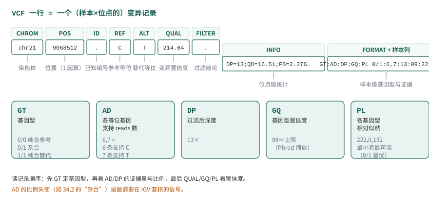
图 7.8 把这条真实记录按列拆开标注，FORMAT 字段的展开见下文。
FORMAT 中最常用的字段是判断一条记录可信度的直接证据：
- GT（genotype）：等位基因型。
0/0纯合参考、0/1杂合、1/1纯合替代；0|1竖线表示已定相（知道各来自哪条同源染色体）。GATK 用./.表示缺失。 - AD（allelic depth）：各等位基因的支持 reads 数（如
6,7：6 条支持参考 C、7 条支持替代 T）。这是”碱基比例”的原始形式——7.4 开头那个 G:A = 4:1 的例子，就是 AD 的直接读法。 - DP（depth）：该样本在该位点的过滤后深度。
- GQ（genotype quality）：基因型判断的置信度（Phred 缩放；99 常表示已到上限）。
- PL（normalized likelihoods）：各基因型似然的相对对数值（最小者归零），是 7.4 推导的 \(P(S \mid G)\) 的身影。
读记录的顺序建议：先 GT 确定基因型判断，再 AD/DP 看证据量与比例是否支持这个判断，最后 QUAL/GQ/PL 看置信度。例如一条 0/1 记录若 AD 为 34,2，等位基因比例明显失衡，即使 GQ 高也值得在 IGV 里复核——杂合位点上两条同源染色体各自被随机抽中，观察比例应接近 1:1（7.4.2 的 \(\frac{1}{2}\) 混合），严重偏离提示重复区域错配、污染或假基因问题。
过滤：硬过滤与 VQSR
caller 输出的每条记录都是”候选”，FILTER 列的任务是把证据不足的标出来。两条路线：
硬过滤（hard filtering）：直接用 INFO 中的统计量设阈值。适合单样本或小队列（没有足够样本训练模型）。常用过滤器与 GATK 文档建议的起点：
| 过滤器 | 表达式示例 | 检出的问题 | 适用说明 |
|---|---|---|---|
LowQD |
QD < 2.0 |
变异证据深度比低（堆得很深但支持的少） | QD=QUAL/DP，对高深度区域尤其有效 |
LowQUAL |
QUAL < 30.0 |
总体置信度低 | indel 建议更严（如 < 50） |
HighSOR |
SOR > 3.0 |
链偏置（变异只出现在一条测序链上） | 真变异应两条链都有支持 |
HighFS |
FS > 60.0 |
Fisher 精确检验的链偏置（另一口径） | indel 建议 > 200 |
LowMQ |
MQ < 40.0 |
比对质量低（多在重复/假基因区） | 对 SNV 有效 |
LowMQRankSum |
MQRankSum < -12.5 |
替代等位基因的比对质量系统性更低 | 仅杂合位点有值 |
LowReadPosRankSum |
ReadPosRankSum < -8.0 |
变异只出现在 read 末端 | 末端错误集中的信号 |
gatk VariantFiltration \
-R ref/GRCh38.fa \
-V VCF/${sample}.raw.vcf.gz \
--filter-expression "QD < 2.0" --filter-name "LowQD" \
--filter-expression "QUAL < 30.0" --filter-name "LowQUAL" \
--filter-expression "SOR > 3.0" --filter-name "HighSOR" \
--filter-expression "FS > 60.0" --filter-name "HighFS" \
--filter-expression "MQ < 40.0" --filter-name "LowMQ" \
--filter-expression "MQRankSum < -12.5" --filter-name "LowMQRankSum" \
--filter-expression "ReadPosRankSum < -8.0" --filter-name "LowReadPosRankSum" \
-O VCF/${sample}.filtered.vcf.gz注意 VariantFiltration 不删除任何记录，只把 FILTER 列从 . 改写为命中的过滤器名；下游分析用 bcftools view -f PASS 之类取出通过过滤的部分。本章子集（chr21 区间）的实测结果：
620 PASS # 通过全部过滤器
13 LowMQ # MQ < 40：比对质量低，多在重复/假基因区
10 HighSOR # SOR > 3.0：链偏置
# 合计 643 条原始记录，23 条被标记（同一条可命中多个过滤器则显示首个）阈值表是起点不是标准答案——它们来自 GATK 对大量数据的经验总结，你的数据分布不同时（如 FFPE 样本、超深度 panel），应先看统计量分布再定阈值，并把最终采用的阈值记录进交付文档（7.8.3）。
VQSR（Variant Quality Score Recalibration）：用大量变异的统计量训练机器学习模型，给每条记录打分再分级。它需要成千上万的变异做训练数据，因此只适合大样本 WGS；单样本 WES 的变异数量不够训练，这就是为什么本章实战用硬过滤。两条路线的判断标准仍是同一句话：模型需要的输入证据是否充分。
质量评估
过滤前后各有多少变异、被什么过滤器拦下，是必须对账的数字：
# 各过滤器拦下的记录数
bcftools query -f '%FILTER\n' VCF/${sample}.filtered.vcf.gz | sort | uniq -c
# 只保留通过过滤的记录
bcftools view -f PASS VCF/${sample}.filtered.vcf.gz -Oz -o VCF/${sample}.pass.vcf.gz除了流水账，还有一组全局指标可以从整体上检查结果是否”像真的”：
- Ti/Tv 比：转换（transition，嘌呤↔︎嘌呤或嘧啶↔︎嘧啶）与颠换（transversion）的数量比。真胚系变异因突变机制的生化偏好，全基因组约 2.0–2.1、外显子约 3.0–3.3；假变异（错误）没有这种偏好，混入越多 Ti/Tv 越低。它检查的是整体，不指向任何具体位点。
- het/hom 比：杂合与纯合比例。远离群体预期提示污染、性别弄错或过滤过度。
- indel/SNV 比：插入缺失与 SNV 数量比例，异常偏大常与比对错误有关。
# Ti/Tv、het/hom 等全局统计
bcftools stats VCF/${sample}.pass.vcf.gz | grep -E '^TSTV|^SN|^IDD'本章子集的实测输出（TSTV 行依次为：转换数、颠换数、比值）：
TSTV 0 413 157 2.63 413 157 2.63
SN 0 number of records: 620
SN 0 number of SNPs: 570Ti/Tv = 2.63 落在合理区间（外显子胚系约 3.0 上下的口径、小子集区域性波动较大）；要强调的是这个数字来自教学子集的 chr21 区间，只能说明”结果量级正常”，不能外推为全基因组的检测质量。
指标异常时的处理顺序：先检查数据与流程（比对率、重复率、BQSR 是否正常），再看过滤阈值是否合理，最后才考虑生物学解释。把”结果指标异常”直接归结为”样本特殊”，是最常见也最危险的跳步。
7.7 变异注释与证据分层
区分检测结果、功能预测、数据库记录和实际证据。
变异注释在做什么
检测告诉我们”哪里变了”，注释回答”这个变化可能意味着什么”。7.5.1 末尾 ANNOVAR 的输出就是注释的产物：把变异坐标放到基因模型上，得到所在基因（Gene.refGene）、区域（Func.refGene：外显子/内含子/剪接区等）、编码后果（ExonicFunc.refGene：同义/错义/移码等），再挂上人群频率（gnomad_exome）与已知编号（avsnp151）。
使用注释结果前要注意两点。其一，注释依赖转录本选择：同一个基因有多个转录本时，变异可能在一个转录本的外显子、另一个转录本的内含子；不同工具默认的转录本集合不同，结论可能不同，比较多个来源的结果时要先对齐转录本。其二，ExonicFunc 这类功能描述是对编码后果的分类，不是致病性判断——“nonsynonymous”只说明氨基酸改变了，是否有害需要下面的证据分层来判断。
临床与疾病数据库
注释之后，把变异放到已有知识里查证。四个常用数据库各司其职：
OMIM（Online Mendelian Inheritance in Man，https://omim.org/ ）是人类孟德尔遗传的综合数据库，系统整理基因—表型关系，条目由专业团队持续维护，是查询”这个基因与哪些遗传病有关”的首选。基因页面给出功能概述、表型关联、相关文献与外部数据库入口。
ClinVar（https://www.ncbi.nlm.nih.gov/clinvar/ ）是 NCBI 维护的变异—临床意义数据库：研究机构提交变异的解释，连同支持证据汇总公开。每条记录的复审状态（review status）用 0–4 星共五个等级表达证据强度：0 星（未提供断言标准）、1 星（单一提交者提供标准）、2 星（多个提交者结论一致）、3 星（专家小组复审）、4 星（专业执业指南复审）。同样标注”致病”的记录，1 星与 4 星的证据分量完全不同——查库时先看星级的含义，再采信结论。
COSMIC（Catalogue Of Somatic Mutations In Cancer，https://cancer.sanger.ac.uk/cosmic ）主要记录癌症相关的体细胞突变。它对基因的收录分两个层级：Tier 1 有明确的癌症相关活动记录与突变证据，Tier 2 在癌症样本中大量检出但与癌症的因果意义尚未明确。本章处理的是胚系变异，COSMIC 的用途是交叉参考：一个胚系检出的基因若同时是 COSMIC 癌基因，其体细胞突变谱可以为功能解读提供线索。数据库持续更新（2026-10 核查时最新版本为 v104），引用具体数字时应以官网当前发布为准。
BRCA Exchange（https://brcaexchange.org/ ）整合 ClinVar、LOVD 等来源，专门收录乳腺癌易感基因 BRCA1/BRCA2 的变异注释。BRCA 基因研究深入、变异众多、没有集中热点，逐位点权威注释的需求正是这类”专基因数据库”存在的理由；它的分类体系来自 ENIGMA 专家组的统一标准（相当于 ClinVar 的 3 星以上口径）。
把”一个变异”变成”一个临床结论”，中间隔着几层强度不同的证据，不能跨层直通：
- 检测结果：caller 说这个位点基因型可信（QUAL/GQ/AD 支持）——这是本章前半的产出；
- 功能注释：变异改变了编码序列的哪部分（注释工具给出）——只是”可能影响功能”的分类；
- 数据库收录：ClinVar/OMIM 等记录过这个变异或基因——收录不等于致病，要看复审等级与提交证据；
- 致病性判定：按 ACMG/AMP 等指南把人群频率、功能预测、家系共分离、表型匹配等多条证据线组合评级（致病/可能致病/意义未明 VUS/可能良性/良性）。
只有第 4 层是结论，而它依赖前面每一层。意义未明（VUS）在罕见病分析中大量出现，把 VUS 当致病报告是临床解读的经典错误。
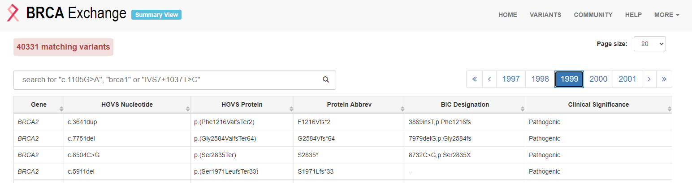
图 7.9 是 BRCA Exchange 的变异浏览页面（截图取自 2020 年前后的网站版本），每条记录给出变异坐标、临床分类与证据来源。
数据库使用案例
用两个从本章示例数据出发的例子演示查证动作。
按结果找基因：从 VCF 注释到 OMIM。 假设从注释结果中挑出一个值得追的变异：4 号染色体第 81046034 位 C→T，GT=1/1，注释为 Func.refGene=exonic; Gene.refGene=BMP3; ExonicFunc.refGene=nonsynonymous_SNV——BMP3 基因编码区的一个纯合错义变异。下一步到 OMIM 检索 BMP3：基因页给出已知功能、相关表型与文献；如果该基因有明确的孟德尔表型且与你的样本表型相符，再回到变异本身查 ClinVar 的收录与星级、gnomAD 的人群频率（纯合罕见 + 表型相符 + 功能已知，才构成较强的候选）。OMIM 界面左侧还链接外部数据库，可继续查蛋白质、动物模型与细胞通路信息。
按基因找变异：从 COSMIC 到 VCF。 反过来，研究癌症相关基因时，先从 COSMIC 的 Cancer Gene Census（CGC，https://cancer.sanger.ac.uk/census ）拿癌症基因目录，再在自己的 VCF 里检索这些基因：
# 在注释结果中查找 MSH6 基因的记录（第 1 列不是注释头的行）
grep -v "^#" VCF/NA12878.annovar.hg38_multianno.txt | grep "MSH6"以结直肠癌（colorectal cancer）为例，在 CGC 检索 colorectal 能得到相关基因列表；关注其中的 MSH6（DNA 错配修复基因），在 VCF 注释结果里检索到若干变异后，逐条按 7.7.2 的分层去查证——而不是”检出到癌基因 = 与癌症有关”。
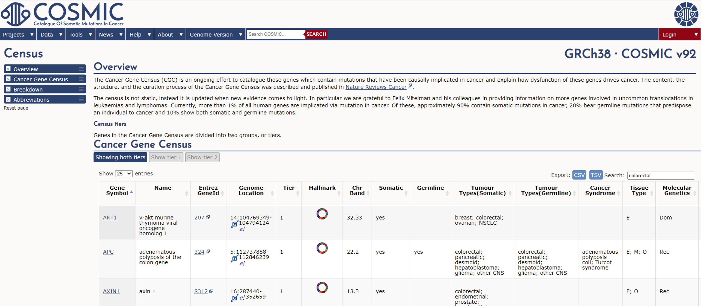
图 7.10 与 图 7.11 是以上操作在 COSMIC 中的对应界面（截图取自 2020 年前后的网站版本，以现行网站布局为准）：在 CGC 页面按关键词过滤基因目录，进入基因页面后可以看到该基因在癌症中的突变概览、分布与文献。
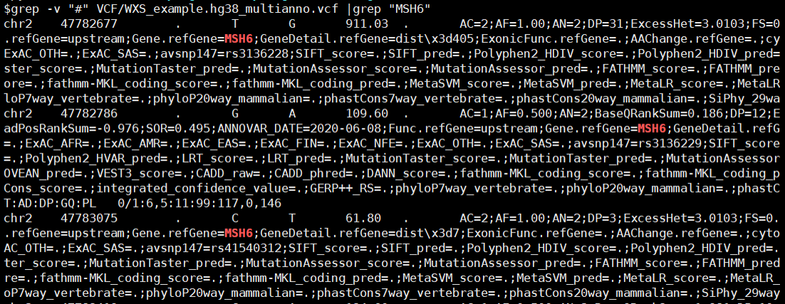
在 COSMIC 的基因页面还能进一步查看编码蛋白质的三维结构：COSMIC-3D（https://cancer.sanger.ac.uk/cosmic3d/ ）提供交互式页面，可以旋转缩放蛋白结构、查看错义突变在结构上的位置分布，并跳转到 PDB 查看原始结构数据——把”突变列表”变成”突变在蛋白上的分布”，是评估功能影响的一个视角（当然，仍属第 2 层证据，不是致病结论）。
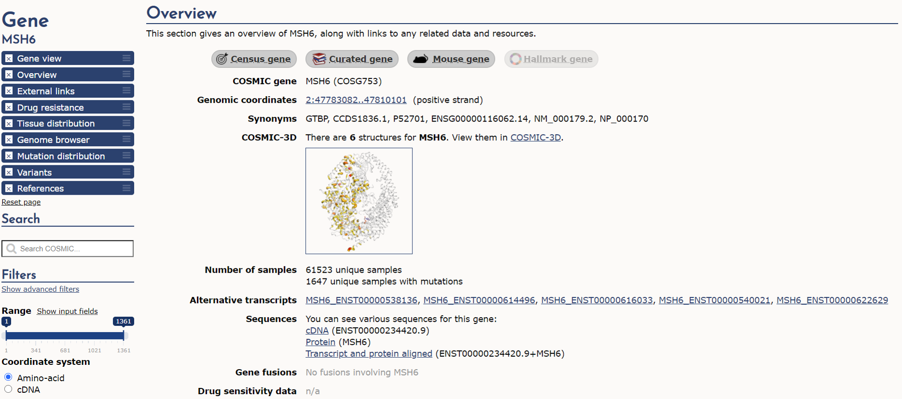
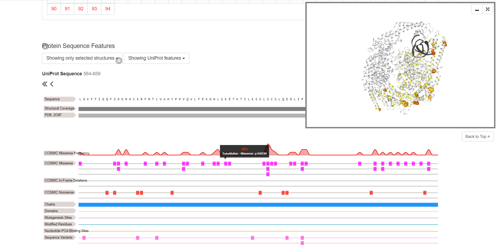
通路分析与公共数据验证
拿到一组候选基因后，还有两类常见后续，这里作为方向概览，不展开操作：
通路与功能富集。 第 5 章用 clusterProfiler 做过 GO/KEGG 富集分析，同样的方法适用于变异候选基因列表。KEGG PATHWAY（https://www.genome.jp/kegg/pathway.html ）把基因按代谢与信号通路组织，六大类（细胞过程、环境信息处理、遗传信息处理、人类疾病、新陈代谢、生物体系统）逐级细分；Metascape（https://metascape.org/ ）则一站整合 GO、KEGG、蛋白互作等多类资源，适合对基因列表做快速注释与富集，每月更新其整合的数据库。
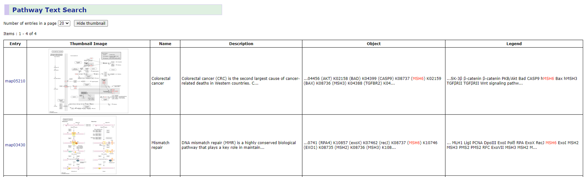
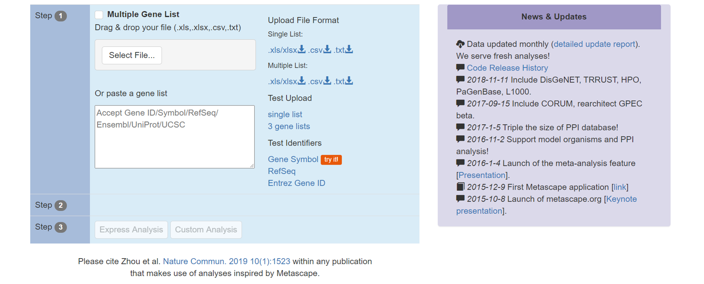
公共数据交叉验证。 TCGA（The Cancer Genome Atlas，入口为 NCI 的 GDC Data Portal：https://portal.gdc.cancer.gov/ ）存储大量肿瘤样本的多组学数据（表达、突变、拷贝数、甲基化与临床信息），适合把自己的结果放到同类样本中对比；CCLE（Cancer Cell Line Encyclopedia，https://sites.broadinstitute.org/ccle ）提供上千种癌症细胞系的基因组与药理数据，是体外模型选择的常用参考。使用这类资源时先明确自己的问题属于哪一层——例如胚系分析的结果不能直接与 TCGA 的体细胞突变谱比较口径，队列与过滤标准不同时的”验证”只是参考。
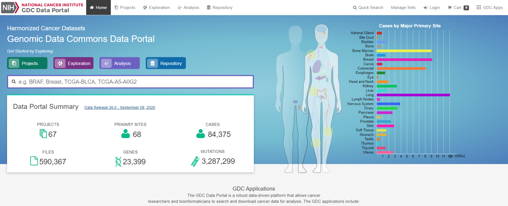
7.8 IGV复核、基准评价与完整交付
评估分析流程的准确性并报告其检测边界。
用 IGV 复核候选变异
第 4 章已经装好 IGV、载入过 BAM。变异分析的复核动作是：同时载入参考基因组、BAM（.recal.bam 及其索引）与 VCF，跳到候选变异位置，亲眼看证据。重点看什么：
- reads 数量与颜色：支持参考与替代等位基因的 reads 各多少条（对照 VCF 的 AD），有没有明显聚集在一条链上（对照 SOR/FS 过滤器在防的问题）；
- 碱基质量：替代等位基因的碱基质量值是否整体偏低（IGV 里低质量碱基显示为暗淡颜色）；
- 比对质量与灰条：reads 上灰色小条标记比对质量低的区域，变异恰好落在一片灰条里时要怀疑比对错误；
- read 位置：变异是否集中在 read 末端（ReadPosRankSum 在防的问题）；
- 周边环境：是否落在重复区域、假基因附近，或 SNP 密集得异常的区域。
图 7.17 是本章示例数据中一个候选杂合变异（chr21:9068512 C>T，即 7.6.1 的那条记录）的复核视图，按实测 BAM 的 27 条 reads 绘制。养成”下结论前看一眼”的习惯，比任何自动化过滤器都更能建立对结果的判断力——过滤器的阈值是别人的经验，IGV 里的证据是你自己的。
基准评价
单个样本分析的质量可以逐位点复核，流程整体的可信度需要基准（benchmark）：用一份”答案已知”的数据跑你的流程，看能对多少。GIAB（Genome in a Bottle，NIST 主导）为 NA12878 等样本发布了高置信度真值集——由多种平台、多个中心的数据交叉验证得到的高置信变异集合。本章示例数据正是 NA12878，这使得流程评价可以直接落地：
- 把你的 PASS 变异集与 GIAB 高置信集比较，得到灵敏度（真值里你检出了多少）与精确度（你检出的里多少在真值中）；
- 常用工具如
hap.py/vcfeval处理区间与表示差异，避免把”同一变异不同写法”误判为错误； - 高置信集只覆盖其定义的高置信区域；比较结果只代表”在这类区域上的表现”，外推到全基因组要谨慎。
没有真值集的物种或样本，就用 7.6.3 的全局指标（Ti/Tv、het/hom、过滤比例）做自检——证据弱一档，但总比只看”跑完没报错”强。
完整交付与报告
分析的终点不是 VCF 文件，而是一份可追溯的结果说明。一个胚系小变异分析的完整交付应包括：
- 数据来源：样本编号、测序数据 accession（如 SRR8381428）、参考基因组与注释版本、known-sites 资源版本；
- 软件与参数：每个工具的名称、版本、关键参数（过滤阈值尤其要写明依据）；
- 过程指标：质控保留率、比对率、重复率、深度统计、过滤前后变异数、全局质量指标（Ti/Tv 等）；
- 结果与边界：最终变异列表及其注释、检索过的数据库与版本、未覆盖区域或深度不足区域的说明、结论适用的范围（哪些变异类型、哪些区域、什么置信水平）；
- 复核证据：关键变异的 IGV 截图或等价的记录。
这份清单也是与 AI 协作的核对表：让 AI 复核你的分析或给出方案时，要求它先复述这些要素——数据从哪来、用什么版本、检查过什么指标、结论边界在哪。答不上来的环节，就是需要你自己回到数据去验证的环节。至此，从”一叠 FASTQ”到”能对结论负责的小变异分析”，本章走完了全链；判断力不在于记住每个命令，而在于每个环节都能回答”为什么这样做、怎么检查、还能相信到什么程度”。
Choi M, Scholl UI, Ji W, et al. Genetic diagnosis by whole exome capture and massively parallel DNA sequencing. PNAS 106(45):19096–19101 (2009). doi:10.1073/pnas.0910672106。↩︎
Sakharkar MK, et al. Distributions of Exons and Introns in the Human Genome. In Silico Biology 4:387–393 (2004)。↩︎
Goodwin S, McPherson JD, McCombie WR. Coming of age: ten years of next-generation sequencing technologies. Nature Reviews Genetics 17:333–351 (2016)。↩︎
Meynert AM, Ansari M, FitzPatrick DR, Taylor MS. Variant detection sensitivity and biases in whole genome and exome sequencing. BMC Bioinformatics 15:247 (2014). doi:10.1186/1471-2105-15-247。↩︎
Lord J, et al. Prenatal exome sequencing analysis in fetal structural anomalies detected by ultrasonography (SHAPE study). New England Journal of Medicine 380:2468–2475 (2019)。↩︎
Ng SB, et al. Exome sequencing identifies the cause of a mendelian disorder. Nature Genetics 42(1):30–35 (2010). doi:10.1038/ng.499。↩︎
G、C 碱基之间由 3 个氢键连接，双链更稳定、不易被打断，GC 含量高的区域通常片段偏大；PCR 变性时不易解开，解开后单链也容易自身粘合形成二级结构，聚合酶对高 GC 片段的扩增效率因此下降，高 GC 外显子的测序深度系统性偏低[^meynert-2014]。↩︎
Meynert AM, Ansari M, FitzPatrick DR, Taylor MS. Variant detection sensitivity and biases in whole genome and exome sequencing. BMC Bioinformatics 15:247 (2014). doi:10.1186/1471-2105-15-247。↩︎
统一的形式是 \(P(S_i \mid g)=P(I_i{=}1)^{I_i}\cdot P(I_i{=}0)^{1-I_i}\)：指数充当”开关”，留下实际发生的那个事件的概率。不同基因型下”观察到参考碱基”的概率不同，最终公式因此不同。↩︎
Ren S, et al. Efficient Acceleration of the Pair-HMMs Forward Algorithm for GATK HaplotypeCaller on GPU. Cancer Informatics 16:1176934318760543 (2018)。↩︎